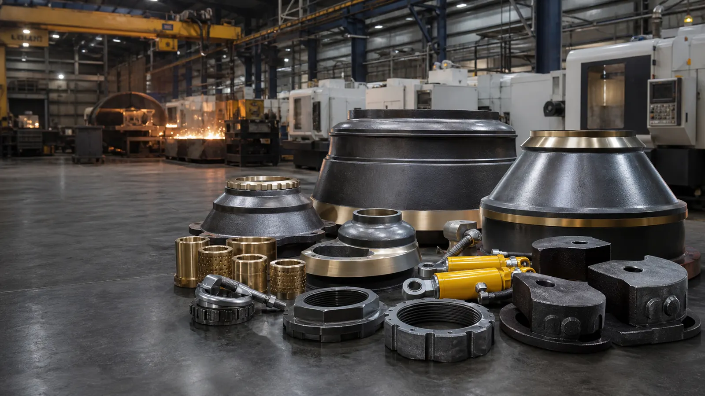

ISO system documents
ISO 9001, ISO 14001 and ISO 45001 records can be shared during supplier qualification where applicable.

Aftermarket crusher parts manufacturer in Anhui, China
XCT Mining supplies manganese liners, bronze bushings, lock nuts, counterweights, hydraulic safety couplings and custom machined crusher parts for mining, aggregate and quarry operations.
For buyers who need fit, lead time and traceability
XCT Mining focuses on crusher wear parts and mechanical spare parts used in cone, jaw and VSI crushers. The site is structured for international procurement searches: part names, compatible machine series, material choices, manufacturing capacity and quotation data are clearly separated so search engines and AI answer engines can understand the supplier profile.
Product photo gallery
Browse the main product families XCT Mining can quote from machine model, part number, drawing, sample or used-part photos.
 Wear Parts
Wear Parts
Mantle, bowl liner and concave parts for HP, GP, CH and CS style cone crushers.
 Bronze / Copper
Bronze / Copper
Eccentric bushings, socket liners, frame bushings and countershaft bushings.
 Cast Steel
Cast Steel
Cast steel eccentric counterweights and balancing-related cone crusher spares.
 Hydraulic
Hydraulic
Hydraulic protection assemblies for crusher release, reset and sealing applications.
 Jaw / VSI
Jaw / VSI
Jaw plates, cheek plates, VSI rotor tips, distributor plates and grizzly bars.
Product range
Mantles, bowl liners and concaves for secondary, tertiary and fine crushing. Available in manganese steel grades such as Mn13, Mn18 and Mn22 depending on feed abrasiveness and impact conditions.
Hydraulic safety couplings and related safety assemblies for crusher protection systems where reliable release, reset and sealing performance matter.
Bronze bushings, eccentric bushings, socket liners, frame bushings and copper wear components manufactured for stable fit and reliable lubrication performance.
Locking nuts, mantle nuts, torch rings, feed cones and retaining hardware for scheduled crusher liner changeouts and emergency maintenance inventory.
Cast steel eccentric counterweights and related cone crusher components for GP and HP style machines, with spray-paint surface treatment and export packing.
Jaw crusher plates, cheek plates, VSI rotor tips, Barmac style rotor parts and grizzly bars for crushing and screening plants.
Compatibility keywords
Quote requests are fastest when the buyer includes crusher model, part name, drawing, material and quantity. The following model families are included as compatibility references only.
Metso, Nordberg, Sandvik, Barmac and other names are trademarks of their respective owners. XCT Mining is an independent aftermarket supplier and is not an authorized dealer or affiliate of those brands.
Check model, part number, dimensions, material grade and working conditions before quoting.
Use casting, machining center, CNC lathe, lathe, drilling, milling and grinding processes according to part type.
Finished products follow visual and functional inspection with raw material traceability where applicable.
Export packing, mixed product orders and delivery via Shanghai Port or buyer nominated forwarder.
Procurement proof
Industrial spare parts buyers need more than a catalog. XCT organizes the documents, inspection steps and shipment details that reduce risk before production starts.
ISO 9001, ISO 14001 and ISO 45001 records can be shared during supplier qualification where applicable.
Available checks include raw material traceability, chemical composition, hardness, dimensions, fit review and visual inspection.
Parts are protected for sea freight with part labeling, rust prevention where needed and wooden case or pallet packing by order type.
Mixed product orders can ship via Shanghai Port or buyer nominated forwarders, with photos shared before dispatch when requested.
Applications
Model pages and engineering guides
How to describe jaw plate wear, cheek plate condition, tooth profile, manganese grade and fitting hardware.
Weekly guide | Jun 15, 2026What buyers should check before requesting replacement mantles, bowl liners, concaves and related cone crusher parts.
Weekly guide | Jun 8, 2026Maintenance and RFQ checklist for oil temperature, oil pressure, filter debris and bronze bushing damage photos.
Weekly guide | Jun 3, 2026Buyer checklist for cone crusher liners, bushings and spare parts with fewer quote errors and faster confirmation.
Series pageAftermarket replacement parts compatible with HP series cone crushers, including liners, bushings and changeout spares.
Series pageGP style cone crusher liners, bronze parts, counterweights and custom spare-part RFQ guidance.
Series pageCH series compatible mantle, concave, bronze bushing and retaining hardware RFQ support.
Series pageCS style cone crusher liners, lock nuts, bushings and custom mechanical spares.
Model pageRFQ page for HP300 mantle, bowl liner, concave, bushings, lock nuts and torch rings.
Model pageReplacement liner, bronze part and mechanical spare inquiries for HP500 style applications.
Model pageMantle, concave, bowl liner, bushing and retaining hardware RFQ support.
Model pageJaw plates, cheek plates, wedges and related spare parts for C125 style jaw crushers.
RFQ supportUse part numbers, drawings, photos and old-part markings to speed up replacement quotes.
QualityMaterial, dimension, machining, packing and documentation points buyers can verify.
Material selectionMatch manganese grade to impact, abrasiveness, feed size and current liner life before quoting.
RFQ checklistA buyer-ready checklist for model, chamber type, part number, wear pattern and destination details.
Maintenance notesLubrication, fit, contamination and operating conditions to check before replacing bronze bushings.
Procurement FAQ
Send the machine model, mantle or bowl liner part number, chamber type, feed size, CSS, processed material and current service life. This helps confirm profile and manganese grade.
Public supplier data lists MOQ as 1 piece. For heavy castings, final order economics depend on part weight, mold status, packing and shipping route.
Attach photos, nameplate image, used part dimensions, drawing, OEM reference number, quantity, destination port and required delivery date.
Use brand and model names only to identify the machine that needs a replacement part. Do not claim genuine, OEM-authorized or dealer status unless legally documented.
Request a quote
Use email, WhatsApp or copy the structured RFQ text. Attach drawings, photos, OEM reference numbers or nameplate images when available.